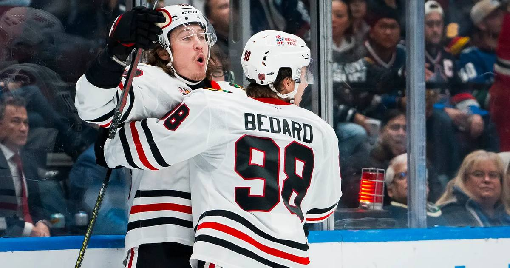

Blackhawks beat Maple Leafs 6-3 on centennial night — Bertuzzi and Nazar each score twice, 100 years to the day after the franchise's first NHL game
Tyler Bertuzzi scored twice against his former club and Frank Nazar added two of his own as the Blackhawks beat the Maple Leafs 6-3 on the 100th anniversary of the franchise's first NHL game — a win that came at a cost, with Connor Bedard leaving early in the third period with an apparent shoulder injury.

Disclosure: this post contains affiliate links. I earn a commission on qualifying purchases.
The night
One hundred years to the day after the Black Hawks beat the Toronto St. Patricks 4-1 in their first NHL game, the Chicago Blackhawks beat the same franchise again — 6-3 over the Toronto Maple Leafs at the United Center on Tuesday night, November 17, 2026, on the franchise's centennial night.
Tyler Bertuzzi scored twice and added an assist against his former club, and Frank Nazar scored twice of his own. The six goals were the most Chicago has scored in a single game this season, and they came in a rush — all six in about 26 minutes of game time, including three in a span of 3:03 in the third period.
How it unfolded
Toronto struck first. Easton Cowan put the Leafs up 1-0 at 3:22 of the opening period, and the game stayed quiet until late in the second.
Nazar tied it on the power play at 13:17 of the second, walking in and ripping a wrist shot past Sergei Bobrovsky. He struck again at 17:54, taking a pass at the blue line from Cole Smith, moving down the right side and scoring from the right dot for a 2-1 lead. It was his ninth and 10th goals of the season, and his fifth in three games — he now leads the team in goals.
Connor Bedard answered 49 seconds later, at 18:51, snapping a wrist shot home off a feed from Bertuzzi to make it 3-2 after two. It was his seventh goal of the season.
Bertuzzi put Chicago up 4-2 with a power-play goal at 9:07 of the third, banking in a Sam Rinzel setup. After John Tavares pulled Toronto within one, Bertuzzi and Oliver Moore answered in the flurry — Bertuzzi's second of the night came at 12:10, finishing a play after linemate Anton Frondell couldn't get a shot off, for the 6-3 final.
Rinzel finished with three assists. Bobrovsky made 19 saves on 25 shots for Toronto.
The cost
The win came with a scare. Bedard left the game 54 seconds into the third period with an apparent upper-body injury suffered while taking a faceoff, and did not return. Coach Jeff Blashill said after the game that Bedard would undergo more testing. It looked like a re-injury of the same right shoulder Bedard hurt last December, which cost him nearly a month.
The context
A century is a long time to wait for a sequel, and the symmetry was exact: the Blackhawks' first NHL game came against the Toronto St. Patricks at the Chicago Coliseum on November 17, 1926 — a 4-1 win. One hundred years later, against the same franchise, they won again, on the same date, in front of a home crowd celebrating the milestone.
For Toronto, the loss was the seventh straight — a skid that has dropped the Leafs to last in the Atlantic Division. For Chicago, the win moved the club to 2-0-1 on its four-game homestand, with Columbus coming to the United Center on Thursday night.
What it means
Centennial nights can go either way — a ceremony that swallows the game, or a game that lives up to the ceremony. This one did the latter. Nazar is now the team's goal leader, Bertuzzi beat his old team twice in one night, and the Hawks put up their biggest offensive night of the season. The only thing that matters now is Bedard's shoulder.
Watch
Source: Maple Leafs vs. Blackhawks | NHL Highlights | Nov 17, 2026 — NHL. Full game highlights from the centennial-night matchup, including Tavares connecting with Gavin McKenna for Toronto and Bertuzzi's two goals for Chicago.
Gear up: Fanatics